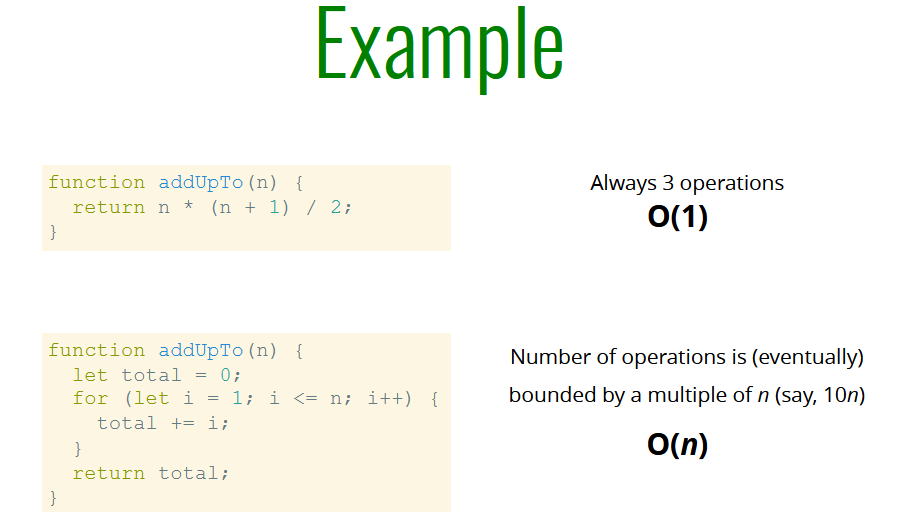
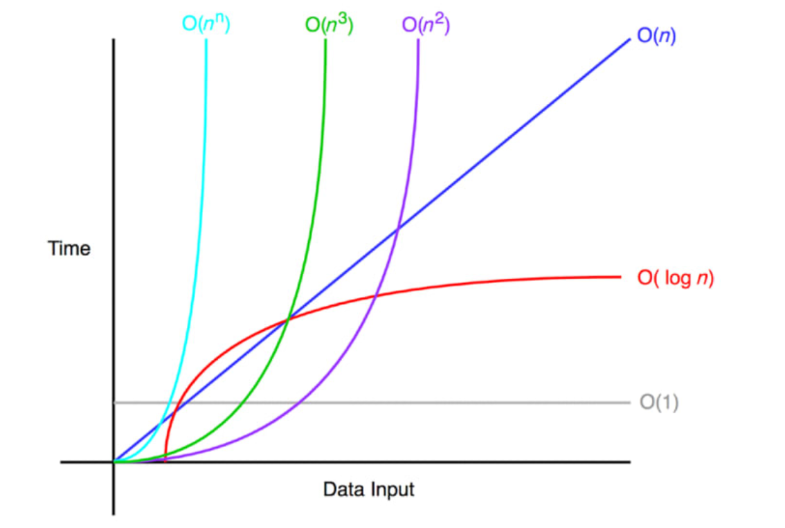

Javascript Algorithms & Data Structures
- Adding or removing any item from the starting of an array consumes resources. It is because when we add or remove item at the start, every item after it has to change it's index number.
Big O
Big O Notation is a way to formalize fuzzy counting. Big O notation is one of the most fundamental tools for computer scientists to analyze the cost of an algorithm.
We say that an algorithm is O(f(n)) if the number of simple
operations the computer has to do is eventually less than a
constant times f(n), as n increases.
f(n) could be linear (f(n) = n)
f(n) could be quadratic (f(n) = n )
f(n) could be constant (f(n) = 1)
f(n) could be something entirely different!

Simplifying Big O Expressions

When determining the time complexity of an algorithm, there
are some helpful rule of thumbs for big O expressions.
Constant time (O(1))
O(1) does not change with respect to input space. Hence,
O(1) is referred to as being constant time.
Linear time (O(n))
O(n) is linear time and applies to algorithms that must do n
operations in the worst-case scenario. most its just A
simple basic loop that within it we perform constant time
operations.
Logarithmic time O(log(n))
A Logarithmic time function is one in which the time of
execution is proportional to the logarithm of the input
size.
Quadratic time(O(n^x ))
With quadratic time algorithms, we have now entered the dark
side of the time complexity.
As the name suggests, the size of the input quadratically
affects the running time of the algorithm. One common
example is nested loops
Rules of Big-O Notation
Coefficient Rule: “Get Rid of Constants”
It simply requires you to ignore any non-input-size-related
constants. Coefficients in Big-O are negligible with large
input sizes.
Sum Rule: “Add Big-Os Up”
The sum rule is intuitive to understand; time complexities
can be added.
Product Rule: “Multiply Big-Os”
The product rule simply states how Big-Os can be multiplied.
Polynomial Rule: “Big-O to the Power of k”
The polynomial rule states that polynomial time complexities
have a Big-O notation of the same polynomial degree.
If f(n) is a polynomial of degree k, then f(n) is
O(nk).